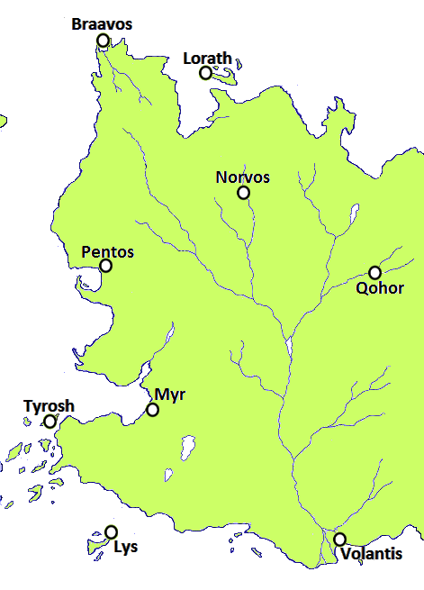

Free Cities
The Free Cities are a group of nine city-states grouped along the western coast of the eastern continent. They trade and interact frequently with the Seven Kingdoms of Westeros.
The nine city-states composing the Free Cities lie Across the Narrow Sea, east of Westeros, on the western side of the eastern continent, mostly on islands or along the coast. There are significant differences between the geography of the various cities, from the thick forests around Qohor, to the rolling hills of Norvos, to the tiny islands of Braavos. Mountains to the east separate the coast from the plains of the Dothraki Sea, though gaps in the mountain range provide the Dothraki people some access to the Free Cities. To the north are the Shivering Sea and Ibben, an island inhabited by sealskin-clad whalers. To the south are Slaver’s Bay and a series of straits leading to the Jade Sea in the far east.
The Nine Cities are:
Map on Next page.
